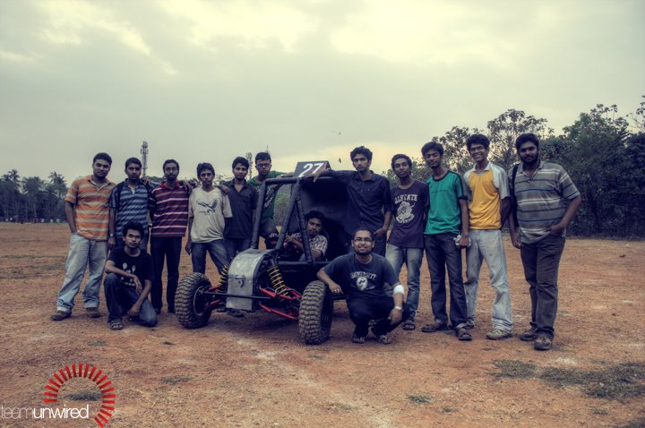

THIS IS WHAT WE HAVE BEEN UPTO

A word about us
Hailing from God's own country,teamunwired is an ensemble of engineers-to-be at National Institute of Technology Calicut (NIT Calicut), one of the country's best technical institutes. We call ourselves Unwired, a team that relishes on engineering challenges. The primary motivation for competing in Baja SAE lies in the desire to go through the hands-on experience of building an engineering prototype and the thrill in watching it work. The 25-membered team comprises inter disciplinary undergraduate students from 2nd to 4th year.
...
Twitter
Google+
Facebook